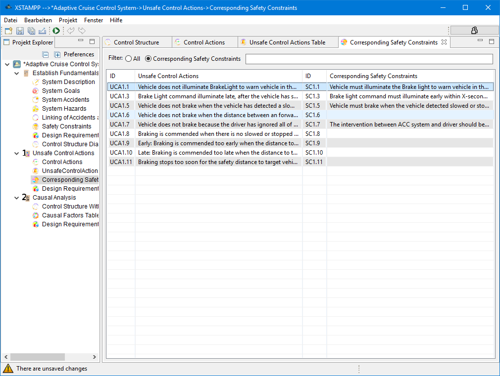

#-------------------------------------------------------------------------------
# Copyright (C) 2018 Lukas Balzer, Asim Abdulkhaleq, Stefan Wagner Institute of SoftwareTechnology, Software Engineering Group University of Stuttgart, Germany.
# All rights reserved. This program and the accompanying materials
# are made available under the terms of the Eclipse Public License v1.0
# which accompanies this distribution, and is available at
# http://www.eclipse.org/legal/epl-v10.html
#
# Contributors:
# Lukas Balzer, Asim Abdulkhaleq, Stefan Wagner Institute of SoftwareTechnology, Software Engineering Group University of Stuttgart, Germany - initial API and implementation
#-------------------------------------------------------------------------------
Corresponding Safety Constraints

Control Actions that have been marked unsafe can be used to define new Safety
Constraints. Navigate to the View labeled as "Corresponding Safety Constraints" and
double click on the cell next to the Unsafe Control Action that corresponds to the new
Safety Constraint you want to define.